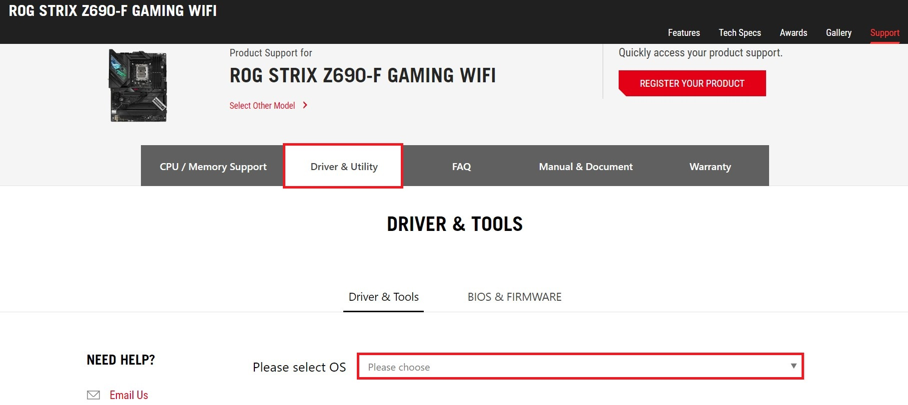

Ovladače, firmware a utility
K systémovému software můžeme kromě operačních systémů zařadit ovladače hardarových zařízení, firmware a aspoň zčásti i tzv. utility.
Ovladače zařízení(device drivers)
Speciální programy, které zajišťují komunikaci OS s určitým technickým vybavením. Bez potřebného ovladače nemůže zařízení správně fungovat. Standardní ovladače pro běžná zařízení, jakými jsou flash disk, myš, klávesnice nebo digitální fotoaparáty, bývají součástí moderních OS. Instalaci zařízení ve Windows usnadňuje standard Plug and Play (PnP - „připoj a hrej“), který zajistí automatickou detekci nově připojeného hardware a případně i automatické vyhledání potřebného ovladače. Není-li driver nalezen přímo v OS, musí být použit externí instalátor ovladače z disku dodaného se zařízením (např. z instalačního CD k tiskárně), nebo stažený z internetových stránek, nejlépe přímo od výrobce. Nevhodně zvolený ovladač může v krajním případě způsobit nefunkčnost zařízení, někdy i celého OS.
Firmware
Programové vybavení, které slouží pro řízení nějakého vestavěného systému (embedded system). Firmware řídí například kalkulačky, počítačové komponenty (pevný disk, router…), mobilní telefon, digitální fotoaparát atd. Dříve byla aktualizace firmwaru realizována nahrazením paměťového média obsahujícího firmware (např. výměna ROM paměti), dnes může být novější verze firmware přepsána díky používaným flash pamětem. Základním firmwarem v počítači je BIOS (Basic Output-Input System), který zajišťuje především start počítače a umožňuje konfiguraci základní desky i připojeného hardware.
Ukázka firmware:
Utility
Utility jsou menší pomocné programy, které umožňují vykonávat servisní operace potřebné k fungování počítače. Patří k nim komprimační programy, diagnostické a testovací programy, utility pro kontrolu a optimalizaci operačního systému, různé konverzní (převodní) programy, které umí přehledně zobrazit obrázky, převést je z jednoho formátu na jiný atd. Řada utilit je integrální součástí OS. Příkladem může být Správce úloh ve Windows (Task Manager), který umožňuje nejen správu spuštěných programů a služeb, ale i sledování využití systémových zdrojů (procesoru, paměti). Dalšími užitečnými utilitami jsou nástroje pro defragmentaci (defrag) nebo kontrolu disku (chkdsk). Některé utility lze spouštět z příkazového řádku (ping, ipconfig apod.)